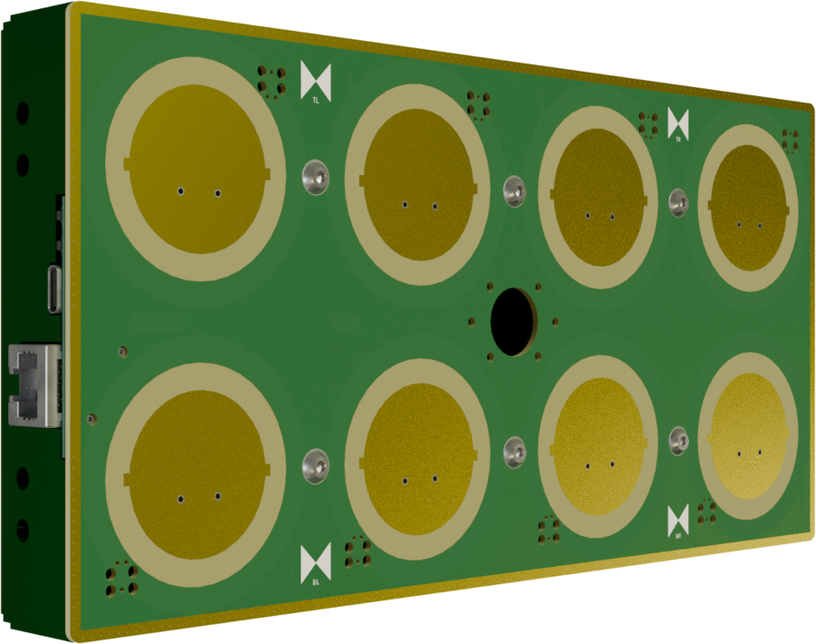
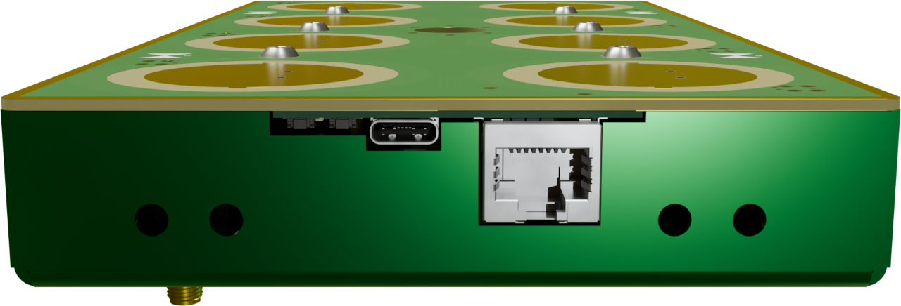
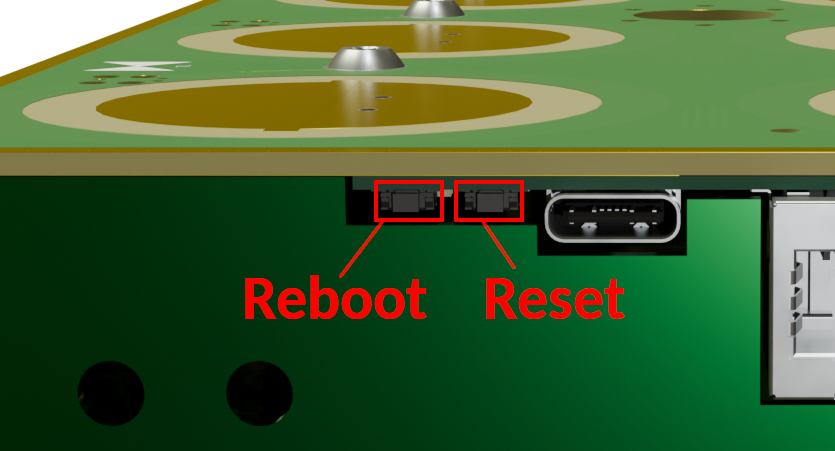
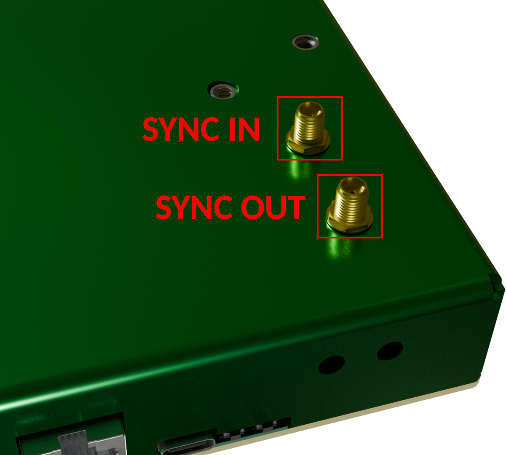
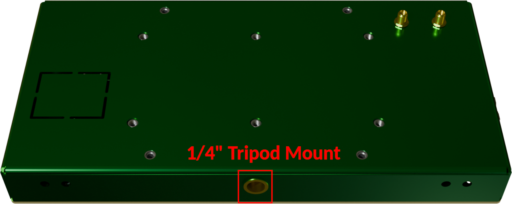

<main class="flex-shrink-0">
	<div class="container">
		<div class="row py-3 cols-12">
			<h1 class="px-0">Setup & Getting Started</h1>
		</div>

		<h2>Technical Specifications</h2>
		<div class="row py-4 cols-12 justify-content-md-center">
			<div class="col col-12 col-md-6 col-xl-5 text-center">
				
			</div>
			<div class="col col-12 col-md-6 col-xl-5 text-center">
				<div class="mt-3">
					<b>Details</b>
					<ul class="text-start">
						<li>Provides phase-coherent CSI for 802.11g/n/ax packets</li>
						<li>Bandwidth: 20 MHz, or 40 MHz for 802.11n channel bonding</li>
						<li>100BASE-TX Ethernet with PoE for data / power</li>
						<li>IEEE 802.3at Type 1 compliant PoE (class 3)</li>
						<li>8&times; dual-polarized patch antennas (mixed linear / circular)</li>
						<li>Reference signal input / output for coherent multi-array setups</li>
						<li>&lambda; / 2 antenna spacing (60mm)</li>
						<li>Power Consumption: ~3.5W</li>
						<li><i>Further details to be published!</i></li>
					</ul>
				</div>
			</div>
		</div>

		<h2>Power Supply</h2>
		<div class="row py-4 cols-12 justify-content-md-center">
			<div class="col col-12 col-lg-9 col-xl-7 text-center">
				
			</div>
		</div>
		<p>
			You have two options to power ESPARGOS:
			<ul>
				<li><b>Power over Ethernet (PoE)</b>: Connect an IEEE 802.3at Type 1 compliant PoE injector or switch to the Ethernet port of ESPARGOS.
					ESPARGOS will automatically detect the PoE power and use it to power both the controller and sensor boards.
					This is the most convenient way to power ESPARGOS, as it requires only a single cable for both power and data.</li>
				<li><b>USB-C</b>: Connect a USB-C power supply to ESPARGOS. Make sure it can provide at least 1A of current at 5V.</li>
			</ul>
		</p>

		<h2 class="mt-4">Web Interface</h2>
		<div class="row py-4 cols-12 justify-content-md-center">
			<div class="col col-12 col-lg 10 col-xl-5">
				The ESPARGOS controller runs a web server, which provides a WebSocket / HTTP API for controlling ESPARGOS and streaming CSI data, as well as a user-friendly web interface to configure ESPARGOS.
				The default IP address of ESPARGOS is <code>192.168.1.2/16</code>.
				You can access the ESPARGOS web interface by following these steps:
				<ul>
					<li>Connect your computer to ESPARGOS. Make sure there is no other device in the network using IP address <code>192.168.1.2</code>.</li>
					<li>Change your computer's IP address settings to:</li>
					<ul>
						<li>IP address: <code>192.168.1.100</code></li>
						<li>Subnet Mask: <code>255.255.0.0</code></li>
					</ul>
					<li>Open a web browser and navigate to <a href="http://192.168.1.2">http://192.168.1.2</a></li>
				</ul>
				<div class="alert alert-info">If you can't connect to ESPARGOS, try to perform a factory reset (see below) to change the network settings of ESPARGOS back to their default values.</div>
			</div>
			<div class="col col-12 col-lg-10 col-xl-7 text-center">
				
			</div>
		</div>
		<div class="row py-4 cols-12 justify-content-md-center">
			<div class="col col-12 col-lg-10 col-xl-7 text-center">
				
			</div>
			<div class="col col-12 col-lg-10 col-xl-5 mt-3">
				The web interface allows you to view live CSI data and change settings like:
				<ul>
					<li>Network configuration and hostname (ESPARGOS supports mDNS)</li>
					<li>WiFi settings (channel, power) and calibration behavior</li>
					<li>Perform a factory reset</li>
					<li>Upload <a href="/firmware">firmware updates</a></li>
				</ul>
				<div class="alert alert-warning">You must make sure to select a country code that matches your location. Please note that not all channels will work depending on the country code.</div>
			</div>
		</div>

		<h2 class="mt-4">Reboot and Factory Reset</h2>
		<div class="row py-4 cols-12 justify-content-md-center gap-3">
			<div class="col col-12 col-md-6 col-lg-6 col-xl-7">
				<p>
					To simply reboot ESPARGOS, use the web interface, use the reboot button or power cycle the device.
					This will wipe ephemeral data, but keep all static settings intact.
				</p>
				<p>
					The easiest way to perform a factory reset is to use the web interface.
					If you cannot access the web interface, press and hold the button right next to the USB-C connector for 5-10 seconds until the controller reboots.
					The factory reset will wipe all settings (including network settings), but it will not revert to an older firmware version.
				</p>
				<p>
					If you suspect that the controller firmware is corrupted, please consider <a href="/firmware#recovery">firmware recovery options</a>.
				</p>
			</div>
			<div class="col col-12 col-md-5 col-lg-5 col-xl-4 text-center">
				
			</div>
		</div>

		<h2>Reference Signal Output / Input</h2>
		
		<div class="row py-4 cols-12 justify-content-md-center gap-3">
			<div class="col col-12 col-md-5 col-lg-5 col-xl-3 text-center">
				
			</div>
			<div class="col col-12 col-md-6 col-lg-6 col-xl-8">
				<p>
					There are two SMA connectors on the back of ESPARGOS:
					<ul>
						<li>The <b>SYNC OUT</b> connector: If ESPARGOS is in <b>Master mode</b>, outputs the 40MHz reference signal generated by the controller board, a 3.3V DC bias voltage (e.g., for powering active splitters) as well as the 2.4GHz phase reference signal, if currently active.</li>
						<li>The <b>SYNC IN</b> connector: If ESPARGOS is in <b>Slave mode</b> or <b>Master mode</b>, expects an external 40MHz reference signal and the 2.4GHz phase reference signal, if used.</li>
					</ul>
				</p>
			</div>
		</div>

		<!-- TODO: Drawings of different setup schematics -->

		<h2>Dimensions and Mounting Options</h2>
		ESPARGOS is 240mm wide, 120mm high and 26.5mm thick.
		
		<ul class="my-3">
			<li><b>VESA Mount</b>:
			ESPARGOS provides standard-compatible 100mm VESA mounting holes for M4 screws.
			The following drawing may be helpful:</li>
			<div class="row py-4 cols-12 justify-content-md-center">
				<div class="col col-12 col-lg-10 col-xl-8 text-center">
					
				</div>
			</div>
			<li><b>1/4" Tripod Mount:</b> On the lower side of the case, there is a standard 1/4"-20 tripod mount hole for mounting ESPARGOS on camera tripods or other compatible mounts:</li>
			<div class="row py-4 cols-12 justify-content-md-center">
				<div class="col col-12 col-lg-10 col-xl-8 text-center">
					
				</div>
			</div>
			<li><b>Combined Arrays:</b> There are two pairs of M4-sized holes on all four sides of the ESPARGOS case, which can be used to bolt multiple ESPARGOS units together to form larger arrays.
				One of the holes in the pair could be used for mechanical assembly, the other one can be used to run a small coaxial cable for synchronization.</li>
		</ul>
	</div>
</div>

</main>